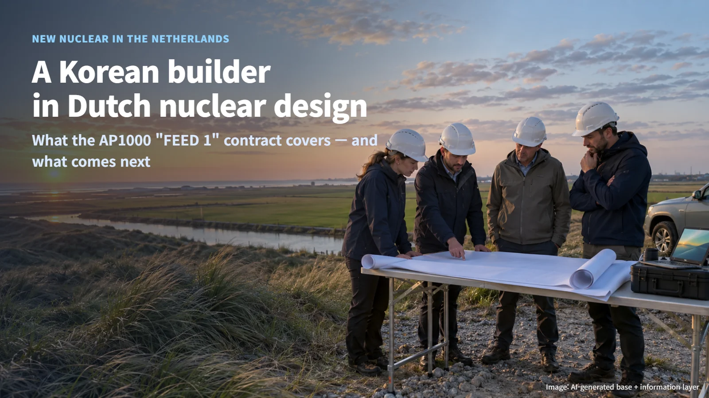
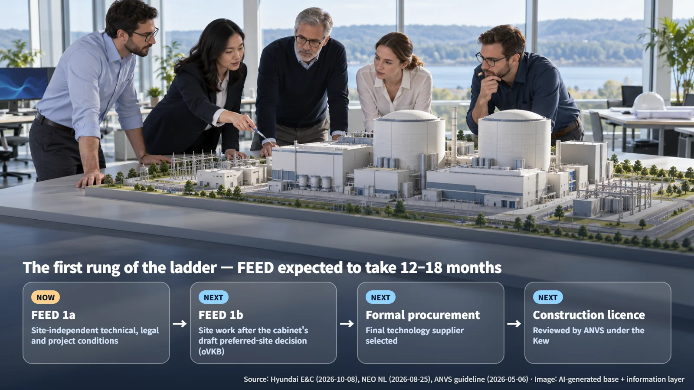
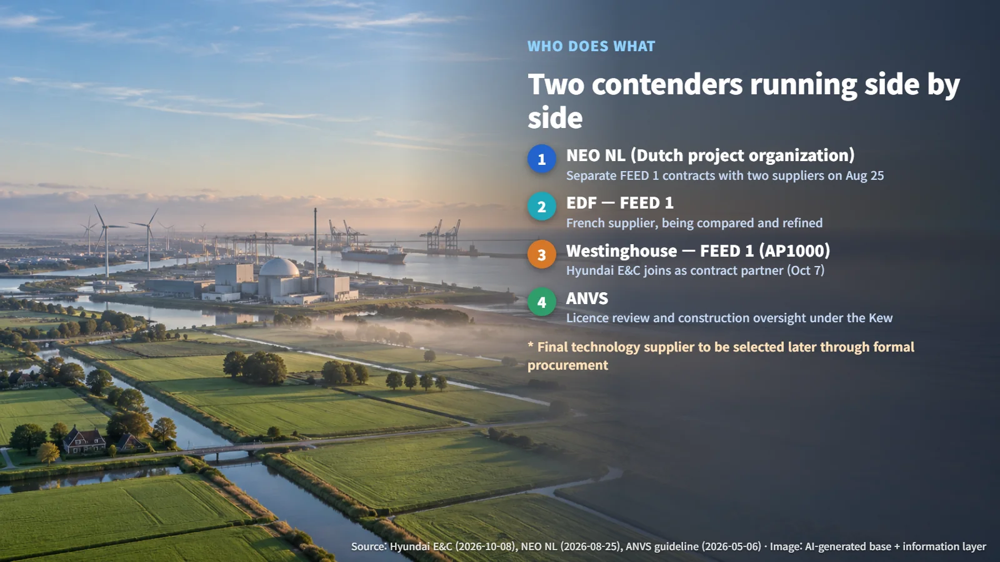
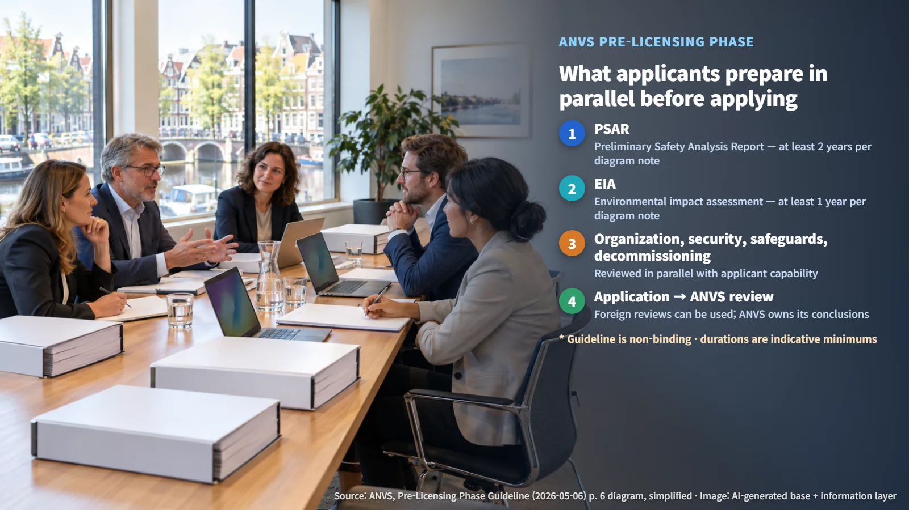

Netherlands · Large Reactors
A Korean Builder in Dutch Nuclear Design: What the AP1000 "FEED 1" Contract Covers and What Comes Next
Hyundai E&C has joined Westinghouse's front-end design work for two new Dutch reactors, while NEO NL runs parallel FEED 1 contracts with EDF and the formal procurement and ANVS licensing lie ahead.
"Is a Korean construction company going to build a nuclear plant in Europe?" Many readers may have asked themselves that after today's news that Hyundai Engineering & Construction (Hyundai E&C) is joining design work for new nuclear reactors in the Netherlands. It is welcome news. Looking closely at what this contract covers, and at the steps that still lie ahead, gives a much clearer sense of its weight.
Let's start with the facts. In an announcement on October 8, Hyundai E&C said that the day before, on October 7, it had signed a contract with Westinghouse for the first phase of front-end engineering design (FEED 1) for two new large reactors in the Netherlands.

What FEED Is: "Design Before the Blueprints," Split into 1a and 1b
FEED stands for front-end engineering design, often called basic design. It is the stage that works through technical conditions, scope of work and schedule before detailed design, procurement and construction begin. For a house, it is the step where you study the plot and the building codes and sketch the big picture before anyone draws the detailed plans.
The Dutch project organization NEO NL divides this stage in two. FEED 1a works independently of the site, firming up technical, legal and project-delivery conditions. FEED 1b follows the cabinet's draft preferred-site decision (oVKB) and covers site-related work. Reviewing candidate sites and building the conditions of a chosen site into the design are separate tasks. The review has begun on a map where the final location is still open.
The schedule deserves equally careful reading. NEO NL expects FEED to take 12 to 18 months, with timing influenced by factors such as when the oVKB is taken. The end of FEED and any construction start therefore depend on those decisions, and neither date has been announced. NEO NL explains that the work helps produce reliable proposals and cost estimates; it has announced no fixed construction cost or price guarantee.

Two Contenders Running Side by Side: EDF and Westinghouse
One fact rarely makes the headlines. On August 25, NEO NL announced that it had signed separate FEED 1 contracts with France's EDF and with Westinghouse. The two companies are carrying out design reviews in parallel, from the same starting line.
The final technology supplier is to be selected later through a formal procurement process. For now, the AP1000 is one of two designs being compared and refined. NEO NL has front-end design contracts with both companies, and the choice of design will come out of that formal procurement.

Hyundai E&C's Role and Where "Winning the Contract" Begins
Hyundai E&C's disclosed position is contract partner to Westinghouse. Its tasks are technical review of candidate sites, master planning and preparing a project execution strategy, along with checking local laws, licensing requirements, technical standards and schedules, and working on risk response and localization strategy. In other words, it is helping tailor the same AP1000 to fit Dutch ground and Dutch rules.
Final design selection, the construction licence and the main EPC contract all belong to later stages. EPC stands for engineering, procurement and construction: a single contract covering all three, and the one people usually have in mind when they say a company has "won a nuclear plant." The structure of a future construction contract has not been disclosed, so Hyundai E&C's current role describes this phase only. FEED experience builds understanding of the project and a local execution plan, while any follow-on role is decided through the procurement, negotiation and licensing work still to come. Hyundai E&C now has a seat at the table where the construction plan is being drawn up.
The Licence Rests with the Applicant, Not the Designer
Building a nuclear plant in the Netherlands requires a licence from the Authority for Nuclear Safety and Radiation Protection (ANVS). ANVS reviews licence applications under the Nuclear Energy Act (Kew) and also supervises construction.
On May 6, 2026, ANVS published the English version of its pre-licensing guideline, a translation of the Dutch guideline of December 18, 2025. The guideline is non-binding, and the licence decision rests on ANVS's review of the application itself. It does set out a principle worth noting: the applicant organization needs its own expertise alongside the designer's. Even when design work is contracted out, the owner must be able to make its own technical judgements.
As the basis for a construction licence, the applicant submits a Preliminary Safety Analysis Report (PSAR), a document that sets out in advance why the plant will be safe. ANVS can draw on reviews by foreign regulators while remaining responsible for its own conclusions. Even with AP1000 experience abroad, the design is checked against Dutch regulations and supported by site-specific analysis. Notes in an ANVS diagram indicate at least 2 years for the PSAR and at least 1 year for the environmental impact assessment (EIA); these are indicative figures that depend heavily on the quality of the submitted documents, and no licensing schedule for this project has been announced.

Milestones to Watch
To follow how far this project advances, check these points in order:
1. oVKB: which preferred candidate site the cabinet chooses 2. Formal procurement notice: when the formal procurement to select the final technology supplier opens 3. Owner-supplier division of responsibility: how NEO NL and the supplier split design and construction responsibilities 4. Hyundai E&C follow-on contracts: whether its participation continues past FEED
A nuclear project is like a long ladder, and it matters to know which rung you are standing on. A Korean builder taking a seat at the design table for a European nuclear plant is a meaningful start. Keeping the starting point and the finish line clearly in view is the best way to welcome this news accurately.